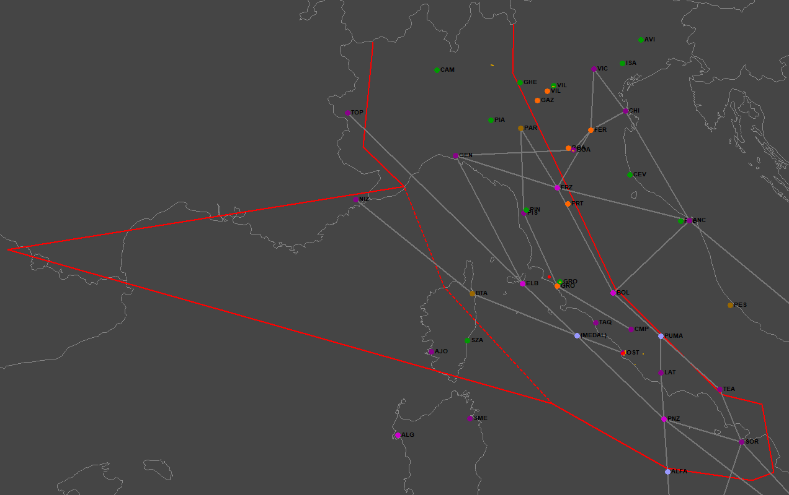

I due F-104
Luogo comune: due F-104 partirono da Grosseto per effettuare una missione d'addestramento a Villafranca. A bordo di un aereo c'erano Naldini e Nutarelli, a bordo dell'altro c'era l'allievo Giannelli. Durante il volo di ritorno, s'imbatterono nel MiG sotto alla pancia del DC-9 Itavia e squoccarono l'allarme generale.
Motivazione: ciò sarebbe "dimostrato" dai tabulati radar e dai registri di volo.
Questa ennesima panzana è forse la più difficile da eradicare, in quanto la ricostruzione della rotta seguita dai due ipotetici F-104 è stata fatta dai periti d'ufficio (v. "Perizia radaristica Dalle Mese ed altri - 16.06.97" a fine pag. 10), incaricati dall'Autorità Giudiziaria di assegnare una precisa identità a tutte le tracce presenti nei tabulati radar.
Tuttavia, facendo ricorso ad elementi documentali, testimoniali e ad un pizzico di buonsenso, si dovrebbe arrivare a prendere atto, una volta per tutte, della totale infondatezza di questa leggenda.
Si può ritenere parte integrante di questa pagina anche il paragrafo "Traccia LE011" nella pagina "Presenza del MiG-23".
Elementi documentali e testimoniali
Cominciamo ad esaminare la comunicazione che il Comando del 4° Stormo di Grosseto ha trasmesso al Comando della 2a Regione Aerea. Il file "WP001331_001.DOC" fonte riporta quanto segue:
- DALL'ESAME COMBINATO DEL RIEPILOGO DELLE MISSIONI VOLATE NEL GIORNO DI
INTERESSE DAL 20° GRUPPO E DI ALCUNI LIBRETTI CONTENENTI GLI "STATINI DI
MISSIONE" DEI FREQUENTATORI PRESENTI ALL'EPOCA, E' STATO POSSIBILE INDIVIDUARE
CON CERTEZZA LE MISSIONI VOLATE NEL POMERIGGIO DEL 27.06.80 DAL 20° GRUPPO CON
NOMINATIVI SIA PRECEDENTI CHE SUCCESSIVI A QUELLO DI MIX 433;
- L'UNICA MISSIONE RIMASTA SENZA NOMINATIVO CERTO (POSITIVAMENTE DOCUMENTATO) E'
RISULTATA ESSERE QUELLA CON TEMPI DI VOLO DALLE 19,40 ALLE 20,50 LOCALI, SVOLTA
DAL CAP. BERGAMINI (ISTRUTTORE) E DAL S.TEN. MORETTI (ALLIEVO), CON IL VELIVOLO
MM54230 CHE PREVEDEVA L'EFFETTUAZIONE DI UNA INT.8 (NAVIGAZIONE A MEDIA/ALTA
QUOTA CON PENETRAZIONE TACAN SU AEROPORTO INTERMEDIO - RIENTRO A GROSSETO);
- NONOSTANTE NON SIA STATO POSSIBILE RITROVARE IL LIBRETTO CON GLI "STATINI DI
MISSIONE" DELL'ALLORA S.TEN. MORETTI, LA COMPATIBILITA' DEGLI ORARI (TEMPI
DECOLLO/ATTERRAGGIO ED ORARIO DELL'AVVICINAMENTO GCA A VILLAFRANCA), LA POSITIVA
INDIVIDUAZIONE DEI NOMINATIVI DI TUTTE LE ALTRE MISSIONI, LA TIPOLOGIA DELLA
MISSIONE VOLATA PORTANO A PENSARE DI IDENTIFICARE LA MIX 433 CON IL VOLO SOPRA
MENZIONATO (SI HA NOTIZIA CHE ANCHE L'A.G. E' ADDIVENUTA ALLA MEDESIMA
CONCLUSIONE).
Risulterebbe che la missione d'addestramento MIX 433 abbia avuto luogo (anche se qualche dubbio può venire), ma non risulta chiaro chi l'abbia eseguita. Qualche volta, infatti, capita che i documenti trasmessi dall'AMI all'AG abbiano una sorta di alone di mistero che impedisce di stabilire con certezza i fatti riportati. In questo caso, l'alone di mistero presente proprio intorno all'esercitazione a Villafranca non impedisce di arrivare alla conclusione che la MIX 433, se veramente c'è stata, è stata compiuta da un solo aereo avente una ben precisa matricola, non certo da due aerei.
Cerca di fare un po' di chiarezza il documento: "TITOLO 2 - L’istruttoria dal 27 luglio 90 al 31 dicembre 97.", a pag. 485 (ultimo capoverso):
Da un esame dei registri di volo del 4° Stormo di Grosseto, si rileva che il 27.06.80 dopo le ore 19.00 locali, si levarono in volo tre F104 del 20° Gruppo, che rientrarono a distanza di pochi minuti l'uno dall'altro dalle 20.35 alle 20.50. Precisamente:
-h.19.40 – decollo velivolo TF104-G matr.54230, atterraggio h.20.50, pilotato dal capitano Bergamini Giovanni e dal s.tenente Moretti;
-h.19.30 – decollo velivolo TF104-G matr.54253, atterraggio h.20.45, pilotato dal capitano Nutarelli Ivo e Naldini Mario;
-h.19.30 – decollo velivolo TF104-G matr.54261, atterraggio h.20.35, pilotato dal s.tenente Giannelli.
Si rammenta che il 20° Gruppo del 4° Stormo era il Gruppo Addestramento e che i velivoli tipo TF104 sono biposto.
L’orario di decollo e il tipo di missione effettuata dal primo dei TF – MIX INT 8 - riportati nel registro del 20° Gruppo del velivolo pilotato dal capitano Bergamini, potrebbe esser compatibile con l’annotazione del registro del G.C.A. di Villafranca.
Unendo quanto appena riportato (specialmente l'ultima frase) all'"esame di Bergamini", pagg. 12 e segg., appare evidente che Bergamini e Moretti hanno fatto l'esercitazione a Villafranca, mentre gli altri due TF-104G hanno svolto l'altra esercitazione.
Si può, inoltre, aggiungere una considerazione pratica e di buon senso, perché non serve un istruttore dell'AMI per capire che in una missione d'addestramento in cui "si insegna al frequentatore a partire da Grosseto, fare un percorso a media e alta quota e si fanno delle procedure di avvicinamento su altri aeroporti e poi si rientra a Grosseto" (v. esame di Bergamini a pag. 7), l'istruttore deve verificare che l'allievo imposti correttamente gli strumenti di navigazione (frequenza delle radioassistenze, radiali da seguire, ecc) e che poi ne segua le indicazioni con la corretta potenza del motore, velocità, rotta e quota. Se l'istruttore vola a bordo di un altro aereo, come può essere in grado di verificare l'operatività dell'allievo e le indicazioni degli strumenti? A conferma di quanto detto, è utile ascoltare il racconto del Gen. B. A. Gian Luigi Elia in questo video, in particolare al tempo 4:10, dove il generale riferisce che il suo compito di istruttore era verificare l'operato dell'allievo osservando le indicazioni degli strumenti da lui impostati. Evidentemente ciò non può avvenire se allievo ed istruttore volano in due aerei diversi.
Per fornire ulteriori elementi a convincimento che a Villafranca c'è andato un solo aereo, torna ancora utile il "TITOLO 2 - L’istruttoria dal 27 luglio 90 al 31 dicembre 97.", nel quale a fondo pag. 484 viene riportato un estratto del registro avvicinamenti G.C.A. di Villafranca. Il registro indica alle 20:08 (probabilmente orario locale) un vettoramento radar (sicuramente resosi necessario a causa dell'avaria al TACAN di Villafranca) per un TF-104G della missione d'addestramento MIX 433 (v. "Memoria Gamberini, Marini, Di Maria - 19 maggio 1999", nota a pag. 23), seguìto dopo 2 minuti da un avvicinamento radar (di precisione).
Anche questa ulteriore evidenza, quindi, conferma che a Villafranca c'è andato un solo TF-104G; non c'è traccia sul registro di un avvicinamento di un altro TF-104G, fatto confermato dal documento "VILLAFRANCA" fonte
nel quale è chiaramente indicato nella seconda metà di pag. 5 che l'assistenza all'avvicinamento è stata fornita a "un F104 biposto del 4^ Stormo", in coerenza (a parte "F104" invece di "TF-104G") con quanto presente nel registro avvicinamenti. Quindi era chiaro fin dall'inizio che a Villafranca c'era andato un solo TF-104G.
In seguito, i periti radaristici d'ufficio, notando l'evidente presenza sul tabulato di Poggio Ballone di due aerei tra Bologna e Firenze, apparentemente di ritorno da Villafranca, hanno frettolosamente attribuito le tracce radar a due dei tre TF-104G decollati da Grosseto per le due missioni d'addestramento.
Il file "WP000640_001.DOC" fonte riporta il numero della missione compiuta da Naldini/Nutarelli + Giannelli:
[...] SI ELENCANO QUI DI SEGUITO I VELIVOLI CHE HANNO VOLATO NELLA FASCIA DI INTERESSE CON ACCANTO IL NUMERO DI MISSIONE RILEVATO:
- TF104 GROSSETO 1730 1810 TC BERNARDIS ST GIANNELLI MIX 434;
- TF104 GROSSETO 1730 1840 CA NALDINI ST BERTOLASO MIX 431;
- TF104 GROSSETO 1730 1835 CA BERGAMINI ST POGGI MIX 431;
- TF104 GROSSETO 1940 2050 CA BERGAMINI ST MORETTI;
- TF104 GROSSETO 1930 2045 CA NUTARELLI ST NALDINI MIX 432;
- TF104 GROSSETO 1930 2035 ST GIANNELLI MIX 432.
È evidente che "il volo di addestramento di una coppia di F104 atterrati in sequenza a Grosseto" di cui parlano i periti può essere solo la MIX 432, ma questa non ha niente a che vedere con quanto riportato nel registro avvicinamenti di Villafranca, che indica MIX 433 e un solo TF-104G biposto.
In definitiva, siccome gli allievi sono i due s. tenenti Moretti e Giannelli, non può esserci alcun dubbio che l'esercitazione a Villafranca l'hanno fatta Bergamini e Moretti a bordo dello stesso aereo. Comunque, per capire ciò che è successo nel nord Italia la sera della strage, è di fondamentale importanza rendersi conto che da Villafranca è tornato un solo TF-104G e non due, a prescindere da chi lo pilotasse.
Va sottolineato che l'Autorità Giudiziaria ritiene che gli orari presenti nel registro G.C.A. siano indicati in tempo locale, ma nelle righe che seguono lo stralcio del registro si legge: "l’orario di inizio manovra riportato si ritiene espresso in orario locale, nonostante le discordi dichiarazioni dei compilatori". È doveroso precisare che due dei tre controllori d'avvicinamento interrogati dichiarano che l'orario era zulu (indietro di 2 ore rispetto all'orario locale); non c'è, quindi, alcuna certezza che gli orari siano effettivamente in orario locale. Tuttavia, stando a quanto dichiarato dall'allora istruttore Bergamini, "nel 1980 venivano effettuati presso la base di Grosseto anche voli notturni, pero' non di addestramento al volo notturno in quanto la pista non aveva sufficienti aiuti visivi per l'avvicinamento per l'addestramento; [...]" (v. il verbale
fonte
di sommarie informazioni testimoniali del 19.01.1993); è, quindi, ragionevole ritenere che gli orari fossero effettivamente in tempo locale.
Al termine di questo primo paragrafo, abbiamo appurato che non può esserci alcun dubbio che a Villafranca, se qualcuno c'è andato era certamente un solo TF-104G e non due, come inspiegabilmente asserito dai periti d'ufficio.
In quanto ai piloti, dovrebbero essere stati Bergamini e Moretti, ma questo fatto è molto meno rilevante rispetto al numero di aerei che hanno compiuto l'esercitazione.
Free Plot Area
L'elemento oggettivo che, da solo, dovrebbe annullare completamente la possibilità che gli aerei in addestramento decollati da Grosseto potessero comparire sui tabulati radar è rappresentato dall'esistenza di un'area chiamata "free plot" (FPA, nel seguito).
Il documento che istituisce ufficialmente la FPA che c'interessa è intitolato "FREE PLOT AREA IMPLEMENTATION"
fonte.
Nel punto 1 si legge che questa nuova procedura sarà attiva dal 1° aprile al 1° luglio 1980. Nel punto 2 vengono riportate le coordinate dei vertici della FPA:

Il tratto continuo rappresenta l'area esattamente come indicata nel documento, mentre il tratteggio rappresenta l'aerea con la quartultima coordinata est cambiata da "0058E" a "0858E", apparentemente più verosimile (è possibile che un "8" possa facilmente sembrare uno "0" a causa di qualche imperfezione di stampa).
Il punto 5 ci spiega il funzionamento di questa nuova procedura: "ALL NON SIGNIFICANT TRAFFIC ORIGINATED AND FLYING WITHIN THE AREA OUTLINED IN PARA 2 WILL BE CONSIDERED FRIENDLY AND THEREFORE WILL NOT BE INITIATED, TRACKED AND IDENTIFIED." ("Tutto il traffico non significativo originato e in volo all'interno dell'area definita nel paragrafo 2 sarà considerato amico e quindi non sarà inizializzato, tracciato e identificato.").
La frase "TRAFFIC ORIGINATED AND FLYING WITHIN THE AREA" potrebbe ingenerare il dubbio che la procedura si riferisca al solo traffico che soddisfa entrambe le condizioni di essere nato ed essere in volo all'interno dell'area, ma il successivo paragrafo chiarisce che il tracciamento delle tracce amiche cesserà quando esse entrano nella FPA ("TRACKING OF FRIENDLY TRACKS WILL CEASE WHEN THEY ENTER THE FREE PLOT AREA."), è quindi chiaro che la procedura si applica a qualunque traccia non significativa all'interno della FPA, sia essa nata all'interno della FPA stessa che proveniente dall'esterno.
Manca solo di stabilire il significato di "NON SIGNIFICANT TRAFFIC". Be', non c'è niente di più banale. Siccome i radar di sorveglianza della DA servono per avvistare e identificare qualunque traffico aereo potenzialmente in grado di minacciare la sicurezza nazionale, è evidente che un volo d'addestramento ricade perfettamente nella definizione di traffico non significativo. Potrebbe essere potenzialmente più pericoloso un deltaplano pilotato da una persona armata con un fucile, piuttosto che un TF-104G in addestramento.
Non ci può essere alcun dubbio che i radaristi della DA sfruttassero il più possibile la FPA, in quanto non avevano alcun interesse ad imbrattare gli schermi radar con tracce corredate da sigle, SIF, quota, velocità, rotta e linee relative ai voli d'addestramento, del tutto insignificanti ai fini della difesa aerea.
Sappiamo, inoltre, che i caccia possono essere identificati univocamente grazie al modo 2 del transponder (non modificabile dai piloti, almeno negli F/TF-104). Si veda, ad esempio, il documento "WP000520_001.DOC"
fonte, relativo al verbale dell'esame di Del Zoppo, guida caccia a Marsala e addetto alla Sezione Addestramento dell'Ufficio Operazioni. A partire dalla seconda metà di pag. 2, ci sono importanti spiegazioni sull'utilizzo dei modi di funzionamento del transponder.
A fine pagina 2 si può leggere: "IL MODO 2 VENIVA UTILIZZATO PER INDIVIDUARE IN MANIERA PRECISA CIASCUN SINGOLO VELIVOLO, FATTE ALCUNE ECCEZIONI DOVUTE ALLA LIMITATEZZA DEI CODICI DISPONIBILI.".
I radaristi militari, quindi, grazie a delle tabelle e al codice di modo 2 che compariva sullo schermo, riuscivano ad identificare univocamente i vari aerei militari; si veda, ad esempio, il documento "WP000754_001.DOC"
fonte, recante uno striminzito elenco (d'esempio, appunto) di SIF2 usato dai radaristi. È chiaro che un elenco come quello, ridotto ai minimi termini, non serve assolutamente a niente, è solo un esempio per evidenziare che esistevano elenchi (ben più lunghi) di codici e rispettivo significato.
I TF-104G, quindi, avevano sicuramente il SIF di modo 2 impostato con un particolare codice che li identificava univocamente (avevano anche il codice di modo 1 impostato in base al tipo di missione che dovevano simulare).
Quindi, una volta appurata l'identità di ognuno dei tre TF-104G in addestramento, i radaristi della DA non hanno certo perso tempo ad inizializzare la traccia, con la conseguenza che quei tre aerei non possono comparire nei tabulati. È, inoltre, estremamente probabile e ovvio che nessun volo d'addestramento venisse tracciato dagli operatori dei radar di sorveglianza, a prescindere dall'esistenza di una FPA.
Sia i periti d'ufficio che l'AG sono pienamente consapevoli dell'esistenza della succitata FPA e della sua funzione, sia per averlo appreso dalle testimonianze dei radaristi della DA che per l'acquisizione del documento NATO che la istituisce.
L'"Ordinanza di rinvio a giudizio - Sentenza istruttoria di proscioglimento", pronunciata dal Giudice Istruttore Rosario Priore, riporta svariati riferimenti alle FPA (basta cercare la parola "free" all'interno dei file pdf che compongono l'ordinanza-sentenza). Tuttavia, né i periti né l'AG prendono nella benché minima considerazione la FPA; essi si limitano semplicemente ad ignorarla, come se la "presa in carico" di questa FPA costituisse un pericolo per le traballanti teorie dei periti d'ufficio sul "volo di addestramento di una coppia di F104 atterrati in sequenza a Grosseto".
Conclusione
Nessuno dei tre aerei partiti da Grosseto per le due missioni d'esercitazione possono comparire sul tabulato di Poggio Ballone (pur comparendo sullo schermo dei radar), in quanto non sono stati inizializzati.
La missione d'addestramento a Villafranca era composta da un solo TF-104G che certamente non è presente nel tabulato di Poggio Ballone, come non sono presenti gli altri due TF-104G con a bordo Naldini/Nutarelli e Giannelli.